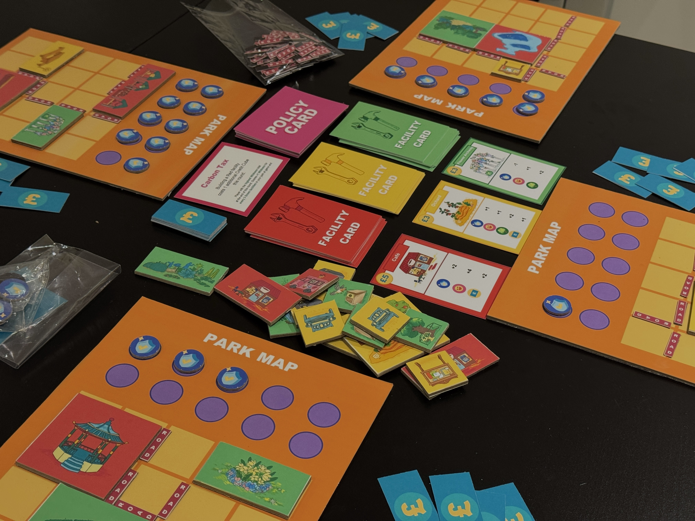
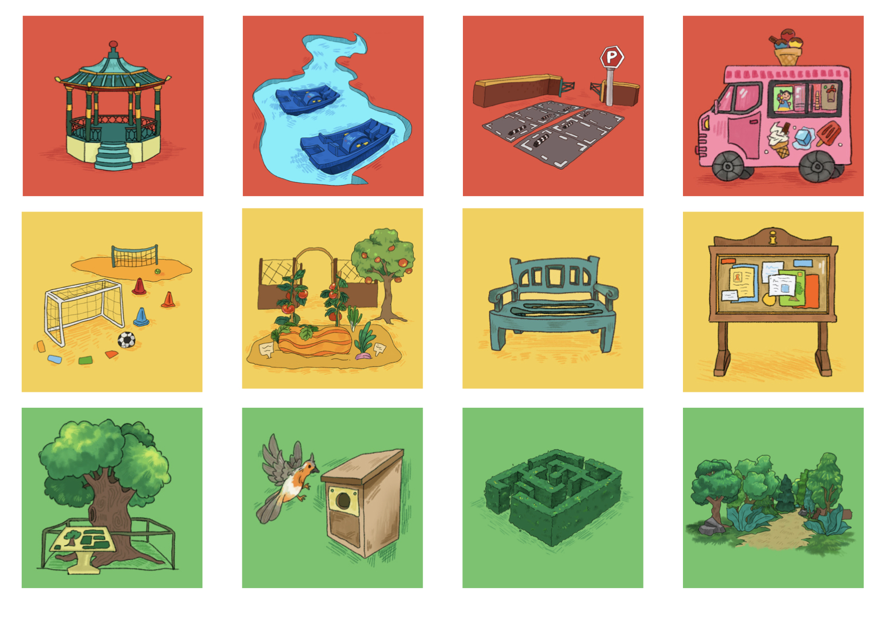
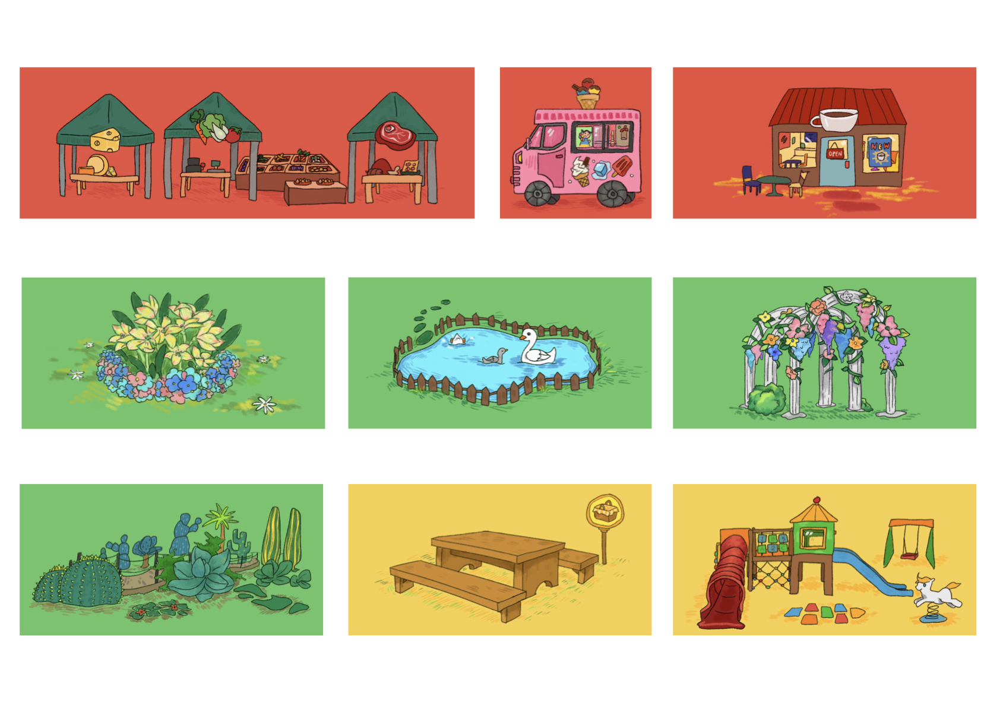

Sprout City
2026 | Board Game Design | Mixed Media

Sprout City is a tile-placement game exploring the homogenization of urban green spaces. Players act as park planners, balancing community happiness against ecological "wildness" to reflect on the delicate trade-offs of man-made nature.


